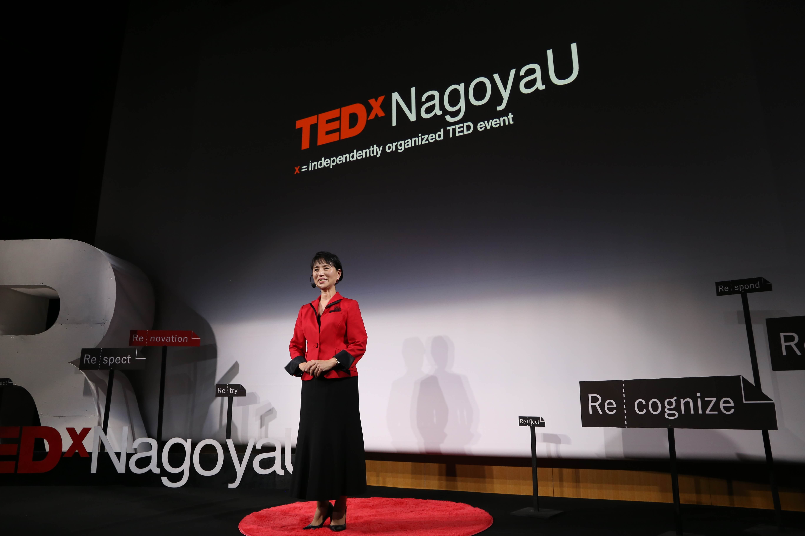
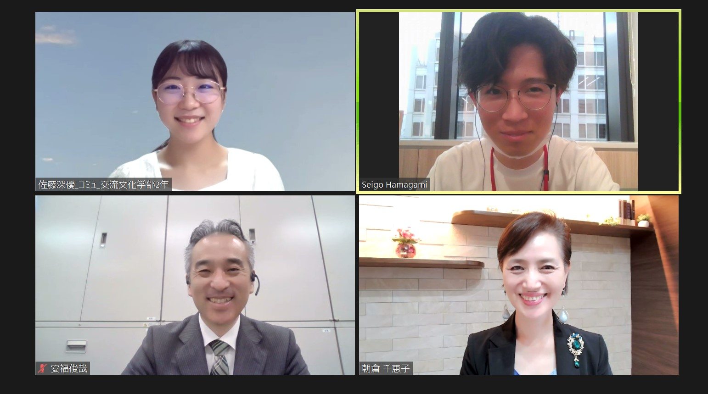

新規開拓様にインタビュー!
1984年にアメリカで設立されたTED「価値あるアイデアを広める(Ideas worth spreading)」の精神に基づき、名古屋大学でTEDxイベントを開催しようと、2013年度に誕生したTEDxNagoyaU。 今回は、2018年にTEDxNagoyaUのメインイベントにスピーカーさんとして登壇してくださった朝倉千恵子さんが代表を務められている株式会社新規開拓様（以下新規開拓様）の朝倉さんと窓口担当の安福さんに、TEDxNagoyaU 2022の開催に先立ち、お話を伺いました！
.png)
TEDxNagoyaU 浜上 (以下浜上)：この度はお忙しい中インタビューにご協力くださりありがとうございます！早速ですが、新規開拓様はどのような事業を行っている企業様なのでしょうか。
朝倉さん：私ども新規開拓は主に法人企業の社員教育・人材育成のお手伝いをさせていただいている会社です。主な事業としては、企業向けに研修やセミナー、講演を行ったり、トップセールスレディ育成塾という女性の社会進出を支援する塾の主宰も行っています。
新規開拓として、どこに行っても通用する社員でいてほしいという願いから、現在は安福をはじめとする全ての社員が講師や営業、事務までオールマイティーにできるようにしています。ご縁のある全ての方に愛と勇気を与え、共に成長し成功していきたいという想いのもと日々社員一同頑張っています。
安福さん：弊社朝倉が今メインで行っていることは、90分の講演です。講演では、全国津々浦々を飛び回り企業の周年行事や決起大会での登壇はもちろん、新入社員向けの学生から社会人に切り替わるマインドセットのお手伝いをしております。
浜上:本年度、TEDxNagoyaUにご協賛いただき、誠にありがとうございます！ずばり、弊団体をサポートしていただいた理由をお伺いしてもよろしいでしょうか。
朝倉さん：現在は大学に入学するまでは一生懸命勉強する学生が多い一方で、入学してからは遊んでいる大学生が多い中、TEDxNagoyaUで活動しようとする意欲溢れるきらきらした皆様の目が素晴らしいなと思いました。
また学生が企業様に協賛をお願いすることは勇気のいることだと思います。その中で、担当の安福と学生さんとのやりとりを通して、学生さんの妥協しない厳しさや懸命に誠実に挑む姿勢が伝わってきました。そして未来の担い手となる学生さんたちがこれから先、社会に出て様々なことを吸収したり活躍したりしていくうえで、大学生活で何を経験・体験するかが本当に大きな意味があると心から感じました。更に4年前にTEDxNagoyaUのイベントに登壇させていただいた際もそうですが、巡りあった運営の学生さんを見てすごいなと思ったので、ぜひ「応援したい」と思い、協賛させていただきました。
安福さん：私は大学生の子どもがいるので、息子と重なったところがあります。新型コロナウイルスの感染拡大が広まって、息子と同世代の学生が縦や横の繋がりがない状態で大学生活をスタートさせていった中で、今回皆さまがTEDxNagoyaUを通じて、10年という縦の繋がりや違う大学であっても横の繋がりを大切にし、これからの歴史を紡いでいこうという行動力。ぜひ会社として自分の子供世代を応援したいと思いました。その為上席通してではありますが、ぜひ協賛させていただきたいと申請を致しました。
浜上：朝倉さんは4年前に弊団体のイベントにスピーカーさんとして登壇されたんですよね！当時の印象や感想をお聞かせいただきたいです。
まず、4年前にスピーカーとして登壇されたきっかけはどのようなものだったのでしょうか？
朝倉さん：以前から、私の講演を何回も聞いてくれてる知人が、「朝倉先生は絶対にTEDに出た方がいい」という話をずっとしてくれていました。その中で安福が「社長、TEDxNagoyaUという学生さんたちが運営している所があるんです」ということで、安福が色々調べて、最終的にご縁が繋がり、ありがたいことにスピーカーに選んでいただきました。
安福さん：元からTEDについては知っていました。
実は私NagoyaUのメインイベントに参加したのは2回あるんですけど、1年前の2017年に完全にオーディエンスとして参加をしました。
そもそもTEDxの雰囲気やトークの様子を実際に知らない事には、朝倉を推薦することができないなと思い参加しました。
そこで学生さん達が同じTシャツを着てイキイキと活動されている姿が素敵でした。朝倉は以前小学校の教員をやっていましたから、いつかまた若い方への支援をしていきたいということを、社員として分かっていましたので是非登壇させたいと思いました。そしてちょうど2018年に女性活躍支援というのが世間で騒がれ始めているタイミングでした。当時のTEDxNagoyaUの代表に一度お話させていただけないかお願いをし、朝倉の面談を設定していただき、是非ということで決まったという流れでした。
なので、実は2年越しで朝倉が登壇することができました。そして私自身はかれこれ5年ほど個人的にTEDxと繋がっているということもあり、今回のこういった機会に携われることが一番嬉しい１人でもあります。
浜上：こちらも2年越しというパターンはなかったのでびっくりしました（笑）通常は、こちらから声をかけたりとかオーディションをしたりするのですが、1つ前のイベントから参加して頂けているのは本当に嬉しいかぎりです！
実際に登壇されてみていかがでしたか？
朝倉さん：今までの講演の中で1番緊張しました。今でもあの動画を見ると穴があったら入りたい気持ちになります（笑）普段の講演はマイク1本で資料やパワーポイントは使わずに行っていました。一方で、TEDxでは原稿やパワーポイントを活用しながらのトークだったので非常に苦戦しました。安福にスライドの操作を頼み苦戦しながらもなんとか二人三脚で乗り越えました。本番の前日にシナリオの大きな変更があったり、私があまりにも緊張しすぎて、用意していたパワーポイントを何枚か飛ばしてしまったりというハプニングもありました。
また18分という限られた時間で伝えたいことを伝えることはとても難しいと感じました。
いつもは90分講演ですから、仮に前半で抜けても後半で十分挽回できます。だからこそ、短い時間の講演が1番難しいんです。
決して格好つける話ではないですが、私はこれまでに何百回何千回と人前で話をしてきました。しかしながら、改めて限られた18分で本当に的を得て、尚且つ来てくださったお客様に感動を与えられるスピーチというのはどれだけ難しいことなのかということを、今一度自分に落とし込むことができた、大変貴重な機会でした。
浜上：そうだったんですね。動画を見る限りでは全然そんな風に見えませんでした！またこの点を踏まえて動画を再度見てみようと思います！

浜上：朝倉さん、そして新規開拓様の今後のビジョンや目標をお聞きしてもよろしいですか。
朝倉さん：今、学校でも家庭でも中々厳しいしつけを受けていないため、社会人になって初めて年齢層の高い人から厳しく指摘をされたりすると簡単に心が折れてしまうんですね。 しかし我々のような教育会社が厳しさの外注化として、これはしっかり覚えておいた方がいいよということを教育を通してお伝えすることによって、その社員の方々の未来が大きく変わる。そんなお手伝いをこれからもさせていただきたいなと思っています。 また、これから更に女性の労働力の強化というのも非常に求められてくると思うんですね。男女雇用均等法、そして女性活躍推進。このようなスローガンを掲げているものの賃金格差は相変わらずで、やっぱり男性と女性の平均年収では、大きな格差があります。そして、女性管理職にいたっては、今現在も10％前後くらいなんです。しかし、本来は女性ってとても優秀です。その優秀な女性たちが、更に正々堂々と仕事ができて、愛される人材として認められるようにバックアップしていきたいなというのはあります。 それこそ、女性限定営業塾、トップセールスレディ育成塾は来年で20年になります。女性も依存型から自立型へ。自分のパートナーに何かあったときに、私たちはどうするの？と言って、パートナーを責めるのではなく、いざとなったときにパートナーを助けられる、救えるくらい強く・たくましく・美しく・賢く・かわいく・優しく・正しく、生きられる女性たちをもっともっと増やしていきたいなと思っています。その思いから、塾の活動にも更に力を入れていきたいのと、また、若い人材、学生さんたちの支援やベンチャー企業もこれから支援していきたいと思っています。
浜上：最後に学生や若者にメッセージをお願いします。
朝倉さん：学生時代にどんな経験をしたのかで社会人になった時に差がつくと思います。だからこそ皆さんにチャレンジしてみることの大切さを伝えていきたいと思っています。そしてインターンシップなどを通して、ますます若い方々をサポートしていけたらと思っています。 学生時代は失敗を恐れずにどんどんチャレンジしていただきたいと思っています。
安福さん：朝倉がよく話すのですが、「食べる前にまずいというな」という言葉。まずは食べてみて自分に合うのか合わないのか、美味しいのかまずいのか、周りの人がこう言うから絶対にまずいのだろうといって食べないのではなく、まずはトライしてみることが大切。この価値観に私は40代を過ぎてから出会いました。 これを若い方が実践したら絶対自分の中でプラスになるということを自信を持って言えるからこそ、チャレンジしようと考えている学生を応援したいと思っています。
浜上：本日は、お忙しい中貴重なお時間をいただきありがとうございました。
素敵なお話を聞くことができとても嬉しく思っております。
新たなアイデアに出会えるTEDxNagoyaU
イベント。今年のイベントもパートナー企業の皆さまのご支援により成り立っております。皆さまからのご期待にお応えできるよう、運営一同、精一杯作り上げていきますので、乞うご期待ください！

取材・編集 TEDxNagoyaU コミュニケーションチームリーダー 名古屋大学 浜上晴梧
編集 TEDxNagoyaU コミュニケーションチーム所属 愛知淑徳大学 佐藤深優